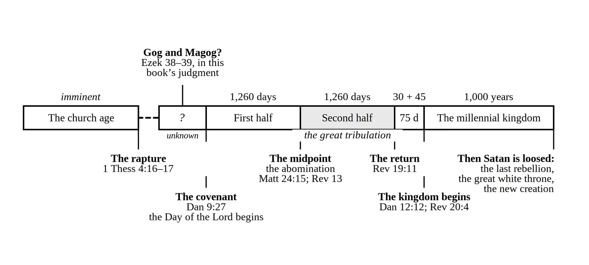

Appendix A of A Prelude to the End of the World, by Brandon Wallis
The Order of Events
Print this (PDF) More free resources

1. The church age. From Pentecost to the rapture. Israel scattered and regathered (1948, 1967); the signs converging (Chapters 2–7).
2. The rapture. The dead in Christ and the Old Testament saints raised; living believers caught up; no sign precedes it (Chapter 3).
3. In heaven. The judgment seat of Christ; the marriage of the Lamb begins (Chapters 1, 3, 8).
4. On earth. The Antichrist confirms a seven-year covenant with Israel; Daniel’s seventieth week begins, and with it the Day of the Lord (Chapters 4, 5, 9, 14). The Psalm 83 war precedes this; Gog and Magog falls before or at the beginning, the timing debated (Chapter 9).
5. The first half—three and a half years. Seals one through four: false peace, war, famine, death. The temple rebuilt, sacrifices resumed; the two witnesses begin; the first martyrs (Chapters 8–11, 14).
6. The midpoint. The covenant broken; the abomination of desolation; war in heaven and Satan cast down; the religious Babylon destroyed by the ten kings; the mark enforced; Israel flees (Chapters 8, 9, 12–14).
7. The second half—the great tribulation, three and a half years, the great and terrible climax of the Day of the Lord. The fifth seal—the first of the great tribulation’s martyrs under the altar—then the sixth seal; the 144,000 sealed while the four winds are held; the seventh seal; the seven trumpets; the two witnesses killed and raised; the seven bowls; commercial Babylon destroyed in one hour; the armies gathered to Armageddon (Chapters 8, 10–12, 16).
8. The second coming. Every eye sees Him; Israel looks on the One they pierced; Armageddon ended by the word of His mouth; the beast and false prophet cast alive into the lake of fire (Chapters 15, 16).
9. The interval—seventy-five days. Satan bound; the tribulation saints raised and joined to the bride; Israel judged in the wilderness; the nations judged; the marriage supper of the Lamb (Chapter 17).
10. The millennium—one thousand years. Christ reigns from Jerusalem; Israel the head of the nations; the temple and the healing river; peace, long life, creation restored (Chapter 17).
11. The end of the millennium. Satan loosed; the last rebellion; fire from heaven; Satan cast into the lake of fire (Chapter 18).
12. The great white throne. The unsaved dead raised and judged; death and Hell cast into the lake of fire; the old creation dissolved (Chapters 18–20).
13. The new heavens and the new earth. The New Jerusalem; God dwells with men; no more death (Chapter 21).
This is from the back of A Prelude to the End of the World. Notes like (Chapter 13) point to chapters of the book. More free resources · About the book